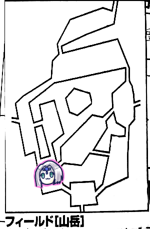
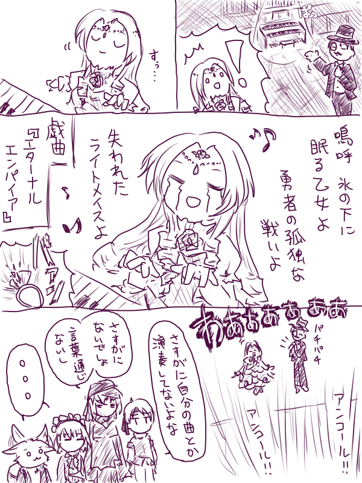

「えなにそれこわ」
GM「あと100%を目指すならプリースト技能取っておくといいです。ないと入手困難なアイテムがあります。これをとるために全員プリースト技能1レベルずつ取ったパーティーがいます」
「草」
とりあえずレベルアップの報告などをしました。
平均レベル9.4になったようです。
村の建物を建てようということになりました。
ピーター「施設ポイントは35あります。施設を建てられるところは2箇所ですね」
GM「名声値いくつある？」
ピーター「52です」
GM「オベリスクは建てられないんだな。名声値80ないと建てられないんです。あ、衛兵駐屯地とかどうですか？、防衛ポイント10上がりますよ」
ナナシ「村長はこの村を一体どうしたいんだろう」
GM「村の運営は君たちに任されているから」
ナナシ「村の議会を担っているのは君たちだから」
村民『まだ建てるんですかぁ？』
GM「村長の目的はエターナルを見つけることだから」
「そのオベリスクってどんなんです？」
GM「能力値を1回振り直すことができる施設です」
ナナシ「grまるごとですか？」
GM「まるごとです。あと商業値80があればカジノが建てられますよ。効果としては、貰える報酬が増えたり減ったりします」
みぞれ「クエストから帰ってきたらその場でギャンブルが始まるんですか」
GM「2d6を振って7以上でプラス、最高100%増えます。最低で-90%」
「-90%」
GM「あと城塞というのがあって、防衛ポイントが20上がります」
ナナシ「主も一撃で倒せそう」
GM「主はさすがに無理だけどね。でも君ら主ミッション受けずに主倒してるから使う機会ないんだよね」
みぞれ「ん？空いてる2箇所にオベリスクかカジノか城塞を建てたいってことですか？」
GM「達成度に関わってくるので」
のこり2枠かー、となったけど現状水道橋を建てて枠を4つ空けられることがわかりましたが、以降何も書かれていないので保留になったと思われます。
GM「さて、ミッションですが、君たちのレベルが上がったことによりヒドラの討伐ががポップアップしました」
みぞれ「ヒドラか。第7回で魔物知識判定ファンブルしてるみたいなんですけどもっかいできますか」
GM「できますね」
ピーター「はーいじゃ判定します。19」
GM「11レベルモンスターです。8部位です。弱点は抜けませんでした」
みぞれ「8部位」
ナナシ「同じ対象には1ターン1回しか攻撃できないのか」
GM「挑発対策がしにくいんだよね」
ナナシ「これ剣のかけらでどこかしら+55点されるんですよね、HP」
みぞれ「やっば」
遺跡探索ミッションを受けました。
そういえば私のメモに何故か書かれていなかったのでリプレイにも書かれていませんでしたが、前回クリアした岬の洞窟で鍵を入手していました。おそらくこれが湖畔の中央の島にある鍵穴に合致する鍵だと思われます。今回
湖畔までのルートですが、エルフの里から船を出してもらえるので一番近い東側から入るルート、つまり山岳ルートで行くことになりました。
みぞれ「あれ複数回利用できるんだっけ」
GM「中央の島へは有償で何度でも。こないだのエリア指定したみたいなのはイベントだね」

ブルーローズ「イベント1です！何も起きませんねー」
探索で赤い花を入手しました。
GM「ひさしぶりのイベントですね。1d6=1、皆さん精神抵抗判定をしてください」
みぞれ「あ(1ゾロ)。初っ端からやらかし」
ピーター「今のうちにやらかしておいたと思えば」
ナナシ「乱数調整ですね！」
GM「1ポイントMPが吸われます。赤い花は綺麗に裂きました。見識判定できますよ」
ピーター「20です」
GM「魔女の花ですね。いつものですね」
ナナシ「8本目ですよ」
ブルーローズ「ビビッド歌います」
みぞれ「吸われたMPが戻った」
ブルーローズ「みぞれちゃんのために歌います！」
みぞれ「ありがとうマスター！」
西へ移動します。

ナナシ「イベント4です」
GM「山岳イベントです」
ナナシ「5です」
GM「突然強力な山風が吹く！生命抵抗目標値17でどうぞ」
みぞれとタッシュが失敗しました。
GM「突風が吹いて飛ばされました。18mの斜面を転げ落ちたので27ダメージどうぞ」
ブルーローズ「タッシュ先生漬物石なのに飛ばされるんですか」
みぞれ「リトルウィング使えますか」
GM「落下ダメージ扱いなのでOKです。ダメージ-20ですね」
みぞれ「受け身もとれますか」
GM「取れます」
みぞれ「16点マイナス。お、ノーダメ」
GM「タッシュ先生は素目で判定どうぞ」
タッシュ「7」
「タッシュ先生ー！」
西へ移動します。

みぞれ「イベント4です」
GM「山岳イベントパート2です」
みぞれ「4です」
GM「切り立った崖の細い道をうまく通れるか判定してください。冒険者LV＋敏捷度で…(ころころ)出目が走りました。達成値20になります」
ナナシ以外失敗しました。
GM「失敗すると元のエリアに戻されるんですが救済措置として自由行動潰して再チャレンジできます」
ナナシ「これナナシはいけるんですか」
GM「全員成功しないとダメです」
再チャレンジは失敗しました。
GM「では1時間進んでこのエリアに戻ってきたところからです。
タッシュ「イベント4です」
GM「山岳イベントです」
タッシュ「3です」
みぞれ「山岳イベント網羅していくねえ」
タッシュ「せっかくなんで埋めていかないと」
GM「崖ですねえ。ここは全員で登らないといけません。失敗するとまた元のエリアに戻されるイベントです。高さは18mです」
タッシュ「18mかぁ、ウォールウォーキング使おう」
ピーター「どうせ移動挟むからね」
タッシュ「そうだね。はい成功」
西へ移動して湖畔へ突入。

GM「フィールド移動したので1日経ちました。食料減らしてください。ところでみぞれちゃん保存食食べられたっけ？」
みぞれ「えっ今更？」
タッシュ「ルーンフォーク専用の栄養カプセルってのはあるね。1粒で1週間食事しなくていい。100円。保存食が1色10ガメルだから、あれ？微妙だな」
GM「クラーケンの移動を決めましょう。ブルーローズは(ご家庭の事情でボイスチャットを)欠席してますのでナナシさんお願いします」
ナナシ「2です」
GM「はい。マスター確認しました。ではイベントをどうぞ」
ピーター「イベント4です」
GM「湖畔イベントです」
ピーター「3です」
GM「空に稲光が走り大雨が振ってきました」
みぞれ「あっこれ何日とか続くやつだ」
GM「日じゃなくて時間ですね。1d6お願いします」
ピーター「いち！いち！いち！…4」
GM「見通しが悪くなり探索判定等にペナがつきます。今朝の7時なので11時まで続きます。皆様めちゃくちゃに濡れながら自由行動をお願いします」
タッシュ「たまにはこういう雨もいいものだ」
ピーター「タッシュ先生全然平気だからって…」
GM「そう言えばわたし、こないだつばめむぎ食べたんですよ、オートミールに入ってて」
みぞれ「エンバクな」
ナナシ「美味でした？」
GM「色々混ざってたからよくわからなかったけど、これがそうなのか！ってちょっと感動した」
南へ移動します。

ブルーローズがイベントで5を出す→湖畔イベント→1を出しました。平和。
GM「平和と思ったか？湖畔は罠があるんですよ。集落に行こうとしたら蛮族の巡航隊に出くわします。全員で7体います。5体が慎重2m弱の直立のトカゲに似た怪物で、1体はこれらを指揮しています。額の部分の鱗が赤く染まっています」
ナナシ「あと1体は？」
GM「あと1体は…ん？そんなやつはいないぞ？」
タッシュ「まさかの」
GM「あーいたいた。あー…数を間違えました。8体です」
みぞれ「増えた」
GM「リーダータイプがもう1体追加です。であと1体はガンを持ってます」
タッシュ「ガンナー！？銃かあ銃はよくないな」
ピーター「魔物知識判定いきまーす。注目の銃から」
GM「注目の銃はですね、リザードマンガンナーです。リーダー格はリザードマンマリーナ、残りはリザードマンです」
ピーターが全員弱点抜きました。
GM「こいつらが巡回兵ですね」
ナナシ「他のリザードマンが倒された時にダメージ+2って仲間思いですねこいつら」
ピーター「ガンナーに向けてファイアモール撃ちまーす。20。でガンナー以外はこいつが当たったかどうか判定が必要ですね」
タッシュ「貫通だからね」
GM「これ乱戦じゃなくても斜線上にいるって考えるのかな」
タッシュ「簡易戦闘の時は強いんだよねこれ」
みぞれ「そっかいつも敵しか使ってなかったから乱戦じゃないケースで使ったことがないのか」
GM「全部巻き込むことにするかー。リザードマン2、4、5が当たりました
ピーター「外すなあ」
GM「くらった敵はガンナー含めて4体、抵抗判定します。ガンナー抵抗」
ピーター「GMので目が走るなぁ、こっちは低い。24点です」
GM「リザードマン3体が消し飛ぶんだよなこれ」
タッシュ「ちなみに簡易戦闘の場合どうなるかはカルディアグレイスに乗ってた。全員巻き込みます。後衛から撃ったら前衛の味方も巻き込みます」
みぞれ「グレネード撃っとくかー。お、高い、23」
GM「全員抵抗失敗」
みぞれ「18点ダメージでーす」
タッシュ「ファイアーボールを前衛に放り込みますね」
GM「全員失敗でーす」
タッシュ「回った。28点ダメージ」
GM「リザードマンは消し飛んだ、マリーナは…耐えている！」
ナナシ「じゃあナナシが後衛まで突っ切って」
みぞれ「突っ切れるんだっけ？あーなんとかってスキルか」
ナナシ「なんとかって…影走りです。あ、やっぱマリーナ攻撃します」
みぞれ「マリーナくんどっちも残り8点ですぅ」
GM「ブルーローズの2回攻撃とナナシの2回攻撃は意味が違うからね」
ナナシ「マリーナその1をレザーリボンで挑発攻撃します。26」
GM「16。修正が15っておばけだよな」
ナナシ「20点です」
GM「しにました」
ナナシ「その2に攻撃します。21」
GM「19」
ナナシ「2回転した。37点」
GM「マリーナ全滅しました」
ブルーローズ「後ろにいるガンナー攻撃します。バフいるかなー」
ナナシ「1回28点ぐらい出せれば相手は死ぬ」
タッシュ「ソードワールドの要求点数じゃないんだよな」
ブルーローズ「期待値が27点だからー」
ナナシ「いらないかな」
GM「ではプレーンブルーローズお願いします」
ブルーローズ「じゃトンファー魔力撃のみで、22」
GM「17」
ブルーローズ「29点！次、20」
GM「13」
ブルーローズ「29点！」
GM「全滅しました。『ば、ばかな…！リザードマンが8体だぞ…！？』」
というわけでエルフの集落に到着しました。
GM「10時になりました」
タッシュ「まだ雨降ってるか」
みぞれ「ご休憩とかできるのかな」
GM「できますよ」
みぞれ「ちなみにさっきの戦闘に雨は影響なかったんですか」
GM「危険感知と罠感知と探索判定だけなので関係ないです。関係あれば水中特性とか使いたかったのになー」
みぞれ「水中特性？ブルーローズ辺りが持ってたっけ？」
GM「リザードマンですね」
みぞれ「エルフは逆か」
ナナシ「エセエルフなんで」
ブルーローズ「エセ？ちょっと聞き捨てならないですわね」
みぞれ「あれ？いつの間に10時になったの？」
GM「俺7時スタートって言った？9時スタートです。なので13時まで雨です」
みぞれ「休みましょか」
GM「一人30ガメルです」
ナナシ「パーティー財布から出します」
GM「はい、じゃ君たちはエルフの村でゆっくり休みました。お昼をまたぐのでクラーケンの移動判定をします」
ブルーローズ「4」
GM「はい。それじゃ島へ向かうんですよね。一人100ガメルです」
ナナシ「これもパーティー財布から出します」
GM「島に上陸しました」
みぞれ「じゃあ例の場所へ」
GM「そう、丘の上に行こうとしたところで出くわすものがいます」
ナナシ「んー？」
GM「最初岩に見えたものが動き始めた。触手がうごめく。そう、さっきの出目4はこの島に来る目だったんですね。魔物知識判定お願いします」
ピーター「20です」
GM「もう言っちゃったけどクラーケンです。弱点は抜けませんでした」
とは言ってるんですが、既に第21回で弱点は抜いてるんですよね。
GM「こいつ半上陸してるだけなので陸上ペナは受けません」
みぞれ「我々は上陸してるの？」
GM「してます」
ピーター「こいつ喧嘩売ってはいけない相手？」
ナナシ「初手足焼き切れば…」
タッシュ「先生22取れるの？」
ナナシ「取れますよ(即答)。ただ焼き切る方が辛い」
ピーター「逃げるか」
GM「達成値21で冒険者LV+敏捷度で判定してください」
タッシュとナナシが成功しました。
GM「回らなかった、14点魔法ダメージです。魔法ダメージが減らせるって奇特な方は減らしてください」
エルフの里まで逃げ帰りました。
エルフ「いやーすごいものを見ましたねー」
ブルーローズ「稀によくあることですわ」
みぞれ「……そうね！！！」
GM「さて、ぶっちゃけおすすめがありましてね。次の移動を待っていると島に突入すると19時になるんですね。夜になるんですね」
ナナシ「泊まるか」
GM「では1日泊まって朝になりました」
みぞれ「あ回復しなきゃ」
GM「HPは最大の20%回復ですね」
みぞれ「最大まで回復しねぇ」
ブルーローズ「これ回復してから寝た方がよかったのでは」
みぞれ「…巻き戻せますか」
GM「私は優しいので巻き戻してよいです」
ブルーローズ「じゃあキュアハートかけます」
ブルーローズ「主の移動は3です！」
GM「はい、島に渡ってみましたが、クラーケンはいません！小高い丘の上に円形の石を敷き詰められた広間があります。瞳の紋章が刻み込まれた石碑があります。そしてそこに鍵穴があります」
ナナシ「落雷を警戒しながら鍵を回します」←前回の苦い経験
GM「石碑に青い筋が一直線に入り、中央から割れて開いていきます。紺碧の石と純白の意思で作られているオルガンが現れました」
みぞれ「あれ遺跡は」
タッシュ「これでイラボス弾いてみればいいんじゃないの？」
ブルーローズ「間違ってても青い雷に打たれるだけだし」
タッシュ「こころ、からだ、やきつーくーすー、いや焼き尽くされたら困るんだけど」
GM「演奏して然るべき達成値が出れば」
ブルーローズ「じゃあバード技能で弾きます。15」
GM「透き通った音色が野山を超えて遠くまで響き渡った。何らかの魔法によって湖面が震えこのフィールド全体に響き渡っているようです」
ブルーローズ「いーらいーらいらーーー♪(注：イラボスの歌)」
GM「達成値15なら十分です。1曲10分ぐらいかかるんですが、弾き終わった瞬間に島の隣の湖面から地面が浮上してきました。英明なるイラボスの遺跡です。紺碧の橋がかかっており小島から行けます。行きますか」
ナナシ「いっきまーす」
GM「その前に自由行動できますがどうします？」
ブルーローズ「10分かけて歌ったブルーローズはできないですよね」
GM「できないですね。特定のものを探索したいなら指定してください」
みぞれ「…なんかあるの？」
ナナシ「この島の情景をお願いします」
・中央に小高い丘
・丘の上に広場
・広場に円形に敷き詰められた青い石
・石碑が割れた後にオルガン
ナナシ「オルガン調べるか、19」
GM「成功しました。このオルガンには仕掛けがあります。一番右の鍵盤が外れて持っていけます」
みぞれ「こわしたー」
ナナシ「壊してねーし！」
GM「この鍵盤、叩いても音が出ません。元から鳴らす用に使われていないようです」
ブルーローズ「遺跡の中で要求されるのかもしれない」
GM「『よく来たな、ここに来たということは鍵盤を持っているはずだ』『ええー持ってない取りに戻らなきゃー』」
みぞれ「じゃあ、それを持って遺跡へ行きますか」
GM「4つ目の遺跡の探索ですね！ゴールが近くなってきた！」
タッシュ「一時期は全然進まなかったのに」
ブルーローズ「真の目的は村おこしだからね」
みぞれ「逆では？村長はエターナルを探したいのでは？でも村おこしのためってどこかで言ってた記憶あるんだよな」
タッシュ「遥か昔にね」
GM「基本的に村長はエターナルのことしか考えてません」
ブルーローズ「あれ？違いましたっけ？」
みぞれ「まあいいや、全ては我々の手の内」
タッシュ「悪人面」
イラボスの遺跡～深度0
GM「君たちはイラボスの遺跡へと足を踏み入れました。ここはイメージとしては階層移動ではなくマチュピチュをぐるぐる回るような感じになります。
ナナシ「まずは急いで進みます、成功。深度は+7です」
イラボスの遺跡～深度7
ナナシ「急いで進みます、成功。深度+4です」
イラボスの遺跡～深度11
GM「イベントが発生しまーす。ここは音楽が盛んだった街らしく、もう弾くことができない壊れた銀色のギターが置いてあります。ギターそのものに価値はないんですが、その中に金貨があります！この金貨の価値を知るには見識判定が必要です」
みぞれ「うさちゃーん！うさちゃんはなんでも知っているんだよ」
ピーター「はーい！1、2、ひっく！17」
GM「成功です。イラボスの金貨です。1d6枚手に入れました」
ピーター「1まい…」
ナナシ「急いで進みます。1ゾロ。おっふｗｗｗ」
GM「進めないのでその場で足踏みになります」
イラボスの遺跡～深度11、2回目
ナナシ「急いで進みます。成功。深度は+11」
イラボスの遺跡～深度22
GM「君たちが足を踏み入れたのは図書館です。たくさんの本がありますが触れただけで崩れ去ってしまいます。奥へ進む道があります」
ナナシ「奥へ進むっていうのは」
GM「そのままの意味です。深度は変わりません」
ブルーローズ「マギテになんか魔力サーチするやつなかったっけ」
みぞれ「マナサーチですね。使います。発動成功しました」
GM「図書館の本棚に何かがあることは分かりますが特定はできないです。目標値15で判定してください」
ナナシ「ほい成功」
GM「ではイラボス図書館探索結果表を振ってください」
ナナシ「6」
GM「えーと、もっかい1d6振ってください」
ナナシ「3」
GM「特殊な魔導書を見つけました。真紅の革表紙で、漆黒の鎖で縛られています」
ナナシ「やっば、かっこいい」
みぞれ「これは見識判定とかいるやつですか」
GM「魔導書は動きました」
「は？」
ピーター「…先に見識判定してみます？ファンブルしました」
GM「なんだかわかりませんでした。痛いねー」
タッシュ「アナライズエンチャントメントとかで魔法とかかかってるのかわかるのかな」
GM「魔法の品にかけた場合その効果が判明するって書いてある。さすが7レベル魔法だね。分からないのは価値だね」
タッシュ「かけました。15。抵抗ある？」
GM「ないです。これはドゥガナの外典です。所持しているとそのキャラクターの最大HPを10減少します」
タッシュ「このHPで-10は…」
みぞれ「ダメでは？」
GM「但し最大HP10以下のキャラには効果がありません。特定の系統の魔法ダメージが2点上昇、使う場合は片手がふさがります。武器扱いです。鎖を切断するとイビルインデックスになって襲いかかってきます」
ピーター「イビルインデックス…魔物知識判定していいですか」
GM「いいすよー」
ピーター「23」
GM「弱点まで抜きました。12レベルモンスターです。情報見ていいですよ」
タッシュ「つよいやん、魔法特技全乗せ」
GM「これは自分の意思で切る場合と事故で切れる場合があります」
ブルーローズ「これ切った瞬間蛮族の砦に放り込むとかどうですか」
ナナシ「たっぴーこれ持ってく？」
タッシュ「ピーターこれ持ったらHPいくつになるの」
ピーター「29！でも2点上昇はでかいよねー、範囲攻撃にも適用されるんだもの」
ナナシ「たっぴーやっぱ持ってくか」
みぞれ「たっぴーってピーターのことか、タッシュの新しい呼称かと思った」
ピーター「たっぴー外典装備しました」
図書館の奥へ進みます。
GM「奥へ行くと5つの瞳の紋章がありました」
みぞれ「ドンピシャじゃん」
GM「危険感知判定をお願いします」
ピーターだけが成功しました。
GM「みんなピーターに感謝するように。1人成功すればOKです。小部屋だと思っていたのは部屋に擬態したモンスターでした。判定に失敗すると先制取られていました。あと石でできた鳥が4体います」
ナナシ「これがほんとのロック鳥」
ピーター「部屋に擬態したやつ判定しまーす。19」
GM「弱点も抜きました。シンカーハウスです。こいつやばいのは3回攻撃だったり部屋の床をダメージ床に変えたりします」
ピーター「鳥判定します、25」
GM「ハミングバードです。ゴーレムです。こいつも弱点抜きました。で、シンカーハウスにはかけら入ってます」
ピーター「ファイアーストーム後ろに撃ちまーす、あ低い。19」
GM「小鳥は美しく『ファイアーボール？ライトニング？』と囀りながら抵抗します。上2体がが成功です」
ピーター「26てーん、あ、プラス2点です、外典で」
タッシュ「ファイアーボールを通したいから確実化してハミングバードを撃ちます。21と22、22で！」
GM「全員失敗です」
タッシュ「17点、しょぼ…」
GM「ハミングバード残り2体です」
みぞれ「適切な範囲魔法を探している…」
GM「遺跡はお互いの前衛の間隔5mだよ」
みぞれ「え？じゃグレネード届くじゃん、後衛に投げます。22！よい！」
GM「2匹とも失敗…」
みぞれ「17点！鳥消えましたー」
ナナシ「ナナシ出ます。擬態ハウスにクリティカルレイ入れてレザーリボンで挑発攻撃。24」
GM「回避！11、できず」
ナナシ「3回転43！クリティカルレイ入れてよかったわ」
GM「生き残りたい、こいつ挑発攻撃無視できる技使えるのにー」
ブルーローズ「マッスルベア、スフィンクスノレッジ使おうかな！迫るーごりらー青薔薇の騎士ー24！」
GM「13」
ブルーローズ「えーい！36点！そしたらもっかい殴りまーす、21」
GM「11」
ブルーローズ「34点！」
GM「撃破でーす」
GM「モンスターは倒れ、床の紋章は光り、刻印を望みますか？と頭の中に声が響きます」
「はーい」
GM「では君たちの左手に刻印が浮かび上がりました」
GM「さて、どうしますか？更に遺跡の奥へ進みますか？」
みぞれ「追加イベントあるもんね今までの遺跡」
ナナシ「鍵盤使ってないし」
みぞれ「そういやそんなものがあった」
ナナシ「そういや刻印って左手なの？」
GM「オボロンが右手、ウルトゥケが左手です」
みぞれ「あれ？イラボスって左手って言わなかった？」
GM「イラボスは左腕です。二の腕ってことですね」
タッシュ「アルテイは？」
GM「胸です
みぞれ「それじゃ残りは右腕か」
ナナシ「左足の甲かもしれないし」
ブルーローズ「お尻かもしれないし」
GM「額かもしれないよ」
ナナシ「普通に進みます。成功、深度は+1です」
イラボスの遺跡～深度23
GM「ピーター1d6振ってくれる？
ピーター「4です」
GM「魔物に遭遇しました」
みぞれ「ここねー大体の遺跡で踏んでるんだけど全部魔物踏んでるんですよね」
GM「もっかい1d6振ってくれる？」
ピーター「1」
GM「蛮族がいましたー。ダークトロールが2体、ミノタウロスキャスターが1体です。知ってるモンスターなので言っちゃいまーす」
いつものように魔物知識判定で両方弱点抜き、先制も取りました。
ピーター「よし、モーラ撃ちまーす。目標は後ろのやつ。21」
GM「ダークトロール2だけ巻き込まれました。抵抗失敗、キャスター抵抗ファンブルしました
ピーター「いきまーす！3回転75点！」
ブルーローズ「ピーターがウサゴリラになった」
GM「当たったやつ吹っ飛びました」
タッシュ「これブルーローズいけるだろ。補助はする。アイシクルウェポンをブルーローズに。手が氷属性になったよ！違った手じゃないトンファー」
ブルーローズ「やったー！ひんやりパンチするか。マッスルベアスフィンクスノレッジジャイアントアーム入れて魔力撃トンファーで残ったダークトロール殴りまーす。20」
GM「回避！19、惜しい！」
ブルーローズ「37点、に魔法ダメージ」
タッシュ「魔法ダメージはつかない。アイシクルウェポンの+3ダメージだけです」
ブルーローズ「じゃこれにダメージ足さなきゃいけないのか。40点です。2回目、23」
GM「14」
ブルーローズ「42点！」
GM「生きてる！」
ナナシ「挑発攻撃いきまーす。23」
GM「16」
ナナシ「18点で」
GM「戦闘終了でーす」
ナナシ「キャスター剥ぎまーす」
ピーター「ブラックオーク剥ぎまーす」
GM「ブラックオークis誰」
タッシュ「ダークトロール剥ぎます。あ6ゾロ！2-11で出ればよかったと思ってたのに、無欲の勝利」
ナナシ「普通に進みます。成功、深度+4」
みぞれ「そういえば装備品手に入れてないね
ナナシ「ないんだよきっと
みぞれ「全部すっ飛ばしただけだよ
イラボスの遺跡～深度27
GM「魔物がいました。3体います」
見識成功、シングでした。弱点も抜きました。先制も取りました。
GM「あこれ先にシングの擬態で危険感知だ。目標15でどうぞ」
成功しました。
GM「ちなみにこいつの酸の身体ですが、そんなに強くない酸なのでこいつに接触した武器防具は溶けるまでに24時間かかりますが鎖はそんなに強くないのですぐ切れます。GMは外典を解放したい！」
ピーター「怖いのでファイアーストーム撃ちまーす。お、23」
GM「ぷよぷよ並の手軽さで撃つよねファイアーストーム。2体目クリティカル成功、あとは抵抗失敗です」
ピーター「24点、じゃない外典入れて26点です、で弱点倍なんでお願いします」
みぞれ「私はチアだと思っているよ」
タッシュ「ファイアーボール撃ちます。前衛の武器をダメにするわけにはいかない。18」
GM「2体目だけ抵抗成功しました」
みぞれ「2体目頑張るなあ」
タッシュ「15点です」
みぞれ「シング残りHP1が2体、頑張ってるのが21なんでななっしーツーパン＆ブルーローズワンパンでいいんじゃないすかこれ」
ナナシ「処理がめんどくさいんすよー」
みぞれ「じゃグレネード撃ちます」
GM「一番上だけ抵抗しました」
みぞれ「19点です」
ナナシ「きたぁ」
GM「全滅しましたー」
ナナシ「うさちゃんのMP魔香草で回復してはいかがでしょう」
みぞれ「せやな」
ブルーローズ「ビビッド歌いまーす」
みぞれ「うさちゃん11回復ね」
ピーター「さっきより回復した！」
GM「11すげーなー」
みぞれ「このためのレンジャーレベル5ですよ」
ナナシ「普通に進みます。成功、深度+5」
イラボスの遺跡～深度32
ナナシ「あここやばいところ」
みぞれ「ウルトゥケではこの深度に罠がありましたね」
GM「罠感知判定してください。目標21です」
全員失敗しました。
GM「青い稲妻が君たちを攻める！HP13点減らしてください」
ナナシ「ウィスパーヒール欲しいなー」
みぞれ「ウィスパーヒール欲しいなー」
ピーター「はいはいウィスパーヒールね。成功、15点回復してください」
GM「15すげーなー」
ナナシ「普通に進みます。成功、深度+4」
イラボスの遺跡～深度36
GM「魔物がいます。的確に魔物を踏んでいく！」
みぞれ「なんでやろなあ」
GM「多分見たことあるんでばらすんですがロックゴーレム1体ミラーゴーレム1体です」
ピーター「はい弱点抜きました。ミラーゴーレムって魔法反射します？」
GM「抵抗成功したら術者に返るよ。そしたら術者の達成値で抵抗ね」
ピーター「よっぽど出目が腐らなきゃ大丈夫なんだけど」
ナナシ「そういや先制判定してねーんだけど。17です」
GM「取られました」
みぞれ「じゃショットガンバレット撃ちます。魔法の弾丸作って、18」
GM「ミラーゴーレム左だけ回避成功しました」
みぞれ「13点です」
タッシュ「ファイアーボールを確実化して撃ちます。ころころ。1、2と1ゾロってなんだよ…いっそファンブルにしてポイントもらったほうがいい気がしてきた。これ高い方選ばなきゃいけない道理はないよね？ファンブルを適用します」
みぞれ「あるんだねこんなこと」
ピーター「じゃファイアーストーム撃ちまーす。23」
GM「全員抵抗失敗しました」
ピーター「28点！」
ナナシ「うーん…(長考)、私がミラーゴーレムを落としましょう。20」
GM「10」
ナナシ「3回転43点です」
GM「はーいしんだしんだしんだしんだ」
ナナシ「2回目行くぜ！26」
GM「12、しんだしんだ」
ナナシ「21点です」
ミラーゴーレム撃破。
ブルーローズ「全乗せでいくかー」
ナナシ「いらないよ」
みぞれ「ロックゴーレムくん左右残り4点ずつだよ」
ブルーローズ「着の身着のままで？じゃトンファー魔力撃で。ありの～ままの～21」
GM「11」
ブルーローズ「ありのままぱーんち！30点」
タッシュ「ありのままパンチで30…」
GM「残ったロックゴーレムの半身は殴ってくれやがったブルーローズを殴ります」
タッシュ「これひょっとして今日初めての敵の攻撃？」
GM「そうだよ。よく悪口を言われるところの先制ゲームって言われるやつな。18」
ブルーローズ「22。カウンターいきまーす。31点」
GM「戦闘終了でーす」
GM「そう言えばミラーゴーレムの反射ダメージやってなかった。受けてください」
タッシュ「無傷で倒せないのかこいつ、厄介だな」
みぞれ「うさちゃんに魔香草使いまーす。13、国産のいいやつだった」
「どこの国だ」
ブルーローズ「ビビッド歌います。びびびーびーびーびびびーびびびー(某コーヒーCMの音楽で)」
ナナシ「普通に進みます。成功、深度+6」
イラボスの遺跡～深度42
GM「イラボスイベントがあります。ここはドーム型の建物になっています。正面はガラス張りになっており、入口にでかい扉があります。看板には『コンサートホール』と魔法文明語で書かれています」
ブルーローズ「血が騒ぎますねぇ」
GM「近寄っていくと2本ある柱がスライドしてブロンズゴーレムが2体出てきます」
ナナシ「チケットをお見せください」
GM「交易共通語で『入場料は一人金貨20枚になります』」
ブルーローズ「我々は観客ではなく演者です」
GM「返事はありません」
ナナシ「金貨って五王国のだよね。今32枚しか持ってないな」
ピーター「剣のかけら入ってるし倒したいよね、とりあえず魔物知識判定します、20」
GM「ブロンズゴーレムですね。弱点も抜きました」
ピーター「ああー、倒せなくはない」
GM「あとひとつ分かることがあるんですが、これ警備型です。無理に通ろうとすると警告が入ります。それでも行こうとした場合戦闘になります」
タッシュ「鍵盤見せても反応ないかな」
GM「ゴーレムはちらっと見たけど反応ないです」
みぞれ「ブルーローズだけ行かせるかぁ」
ブルーローズ「楽譜と鍵盤と、あと書かせた大量の戯曲を持って」
みぞれ「待て何をするつもりだ、とりあえず以前ななっしーにやったみたいにライフシグナルかけます、なんかあったらなんか分かるようにしてください」
ブルーローズ「なんかあったらめっちゃ反復横跳びします」
人形と視界を共有する魔法使うとかナナシに影走りを使わせるとか色々案が出ましたが結局ブルーローズに単独凸らせることになりました。
GM「ゴーレムに金貨を渡すと『どうぞ』と言われて扉が開きます。中は大きなホールになっていてたいへんきらびやかです」
ブルーローズ「こんなところで歌いたーい！」
GM「ホールは開け放たれていて数百席の客席があります。奥の方にはパイプオルガンがあります。弦楽器の音が響き、やわらかい女性の声が聞こえてきます。何言ってるか分からないけど歓迎はされているのは分かります。やがて弦楽器の音が止み、女性が何か言うと客が全員消えます。7色の光が灯り、美しいドレスをきた女性が歌いながら登場しました」
ここの描写がやたら長かったらしく、なんかプレイ中のメモがよくわからないことになっていました。とりあえずなんかショーが開催されてブルーローズはそれを鑑賞していたようです。
GM「一応確認するけど、ブルーローズは言語何習得してる？」
ブルーローズは「ニッチな言語を習得している」との評価を得ました。とりあえずここでの言葉はさっぱり分からないようです。
GM「ええと、背広を着た男性が何か喋っています。ブルーローズに左手を差し伸べてきました。何か聞かれています」
ブルーローズ「よくわからないけど笑顔で頷きます」
みぞれ「大丈夫なのそれ」
GM「男性は笑顔になって拍手します」
ピーター「演奏するスタイルですな」
GM「スポットライトがブルーローズに当たりました」
ブルーローズ「誰もいない観客席にしっかり手を振りながら舞台に上がります」
ピーター「芸が細かい」
GM「男が首を傾げますが、敵意がないことが分かったのか手でOKするとパイプオルガンを指しました」
ブルーローズ「そこは空席なんですよね、進んで着席します」
みぞれ「これは…普通に観劇してる？それとも(ロールプレイ)」
タッシュ「過去最高に嫌な予感がしてる(ロールプレイ)」
ピーター「鍵盤確認しなきゃ」
ブルーローズ「確認します」
GM「探索判定をお願いします」
ブルーローズ「素目で…楽器のことならバード技能で判定できませんか」
GM「どうやって確認しますか」
ブルーローズ「鍵盤が揃っているかとか楽器を演奏する上で当然確認するものを確認します」
GM「いいでしょう。ちょっと難易度あげますが」
ブルーローズ「13です」
GM「特に問題ないように思います」
ブルーローズ「じゃあ何も気づかないな。弾きはじめよう。ブルーローズが名誉点払って作った戯曲『エターナル・エンパイア』を」
みぞれ「中の人は分かってるのにPCが気づけないのがもどかしい…いや大体なにやってるかはわかるんだけどｗｗｗ」
GM「バード技能＋器用で判定お願いします。練技使うならここです」
ブルーローズ「練技なぁ」
GM「器用あげるものはないのか」
ブルーローズ「何かあったら指輪使います」
GM「指輪はめて演奏します。14！」
みぞれ「達成値わからないのにやるのか」
GM「指輪割りますか？」
ブルーローズ「あっそうか、でも割ります！ぱぁん」
GM「足切りは15でした」
ブルーローズ「よかった！」
みぞれ「でも演奏したのは『エターナル・エンパイア』ですよ」
GM「せっかくなのでどんな話なのか聞かせてもらっていいですか」
ブルーローズ「われわれがエターナルエンパイアを探して冒険する話ですが、ドラマティックなものを詰め込んだ感じになってます。氷の下で眠る人とかタッシュ先生の孤独な戦いとか失われたライトメイスとか」
GM「これは未完なんだよね」
みぞれ「俺達の戦いはこれからだ！で終わるんだよね」
GM「交易共通語なので相手には通じないのですが、終わった瞬間割れんばかりの拍手が起こりました」
ナナシ「あいつもしかしてエターナルエンパイアとか演奏してないよな、さすがにないよな」
タッシュ「言葉通じないしさすがにないでしょ」
みぞれ「募る不安感」
GM「背広を着た男はアンコールを求めているようだ」
ブルーローズ「ではアンコールにお答えしてイラボスの曲を」
みぞれ「しかしもう指輪を割ってしまった」
ブルーローズ「あっもう一個あるんで」
「ｗｗｗｗｗ」
ブルーローズ「装備します！えい！14！」
GM「割りますか？」
ブルーローズ「割ります！今度デーモンフィンガー取ろう」
GM「大拍手が起こり、ダンサーが一礼して去っていきます。ブルーローズと背広の男が何か通じたのか同時にお辞儀をして、男も去っていきます」

GM「演奏成功させたことで★2つ手に入れました」
みぞれ「演奏成功って…エターナルエンパイアの話ですか」
GM「そうです。で、2回目の演奏時に鍵盤が外れることに気づきました。黄金で睡蓮の紋章が入っています」
ブルーローズ「持ってきた鍵盤と入れ替えてみます」
GM「ぴったりはまりました」
みぞれ「何も起こらないですか？」
GM「起こらないです」
ブルーローズ「幻影もいませんか」
GM「いません」
ブルーローズ「持ってきた鍵盤をいったんはずしてサインと日付を書いて戻します」
GM「ブルーローズが出てくるとゴーレムは拍手をしながら収納されていきました」
みぞれ「一部始終を問い詰めますよ」
ピーター「これゴーレムいなくなったので入れるのでは？」
GM「入ろうとするとまた出てきますよ」
ナナシ「急いで進みます。失敗しました」 GM「足踏みしてください」
イラボスの遺跡～深度42(2回目)
GM「イベント入れ替えが発生します。公園の泉の中にコインが落ちています。見識判定どうぞ」
ピーター「はーい、20」
GM「イラボスの金貨です。そのまま1d6どうぞ」
ピーター「3です」
GM「3枚の金貨を手に入れました」
ナナシ「急いで進みます。成功、深度+7」
イラボスの遺跡～深度49
GM「1d6振ってください
ナナシ「4」
GM「財宝が置いてあります！2d6どうぞ」
ナナシ「5」
GM「イラボスの金貨を2d6枚入手してください」
ナナシ「5枚もらいました」
ナナシ「普通に進みます。1、2で失敗」
「施設効果で振り直せるんじゃないこれ」
ナナシ「じゃ振り直します。おっクリティカル。深度+1です」
イラボスの遺跡～深度50
GM「重苦しい場所に出ました。辺りには奇妙な紋様が刻まれており、いるだけで気持ちが重くなって来ます。精神抵抗判定を目標値27で振ってください」
「27はやばくない？」
全員失敗しました。
GM「全員1d6振ってください。呪い決定表です」
ブルーローズ「2です」
タッシュ「私も2」
GM「石化が徐々に進行していく呪いにかかりました」
ピーター、みぞれ、ナナシが4。
GM「脳みそがゆっくりと石化していく。知力が-6になります」
「こわ」
GM「制限時間が過ぎたので遺跡から追い出されました。移籍探索のミッションを達成したのでそのまま村へ戻れます」
セズウィック村
村長「とうとうあと1つだな！」
GM「村長は珍しく声がうわずっています」
事後処理をしてこの日のセッションはお開きとなりました。